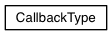
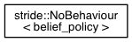

Stride Reference Manual
- generated for commit 007b6e5
Class Hierarchy
Go to the textual class hierarchy


Generated on Tue Jun 19 2018 18:21:17 for Stride Reference Manual by
1.8.14
 1.8.14
1.8.14